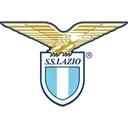
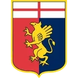

Лацио — Лечче итог матча 21 ноября
Статистика матча

ЛациоЛечче- 10Удары10
- 6Удары в створ2
- 61 %Владение мячом39 %
- 9Угловые3
Данные ESPN.
- ТурнирСерия А
Коротко о матче
Лацио — Лечче 3:0: хозяева победили.
По форме разница была заметной: в пяти последних матчах Лацио — 4 победы, Лечче — 1 победа. Слабое место — оборона: Лечче — в среднем 2,0 пропущенного мяча за игру в этих пяти матчах.
Обе команды играют результативно: больше 2,5 мячей набиралось в 12 из 16 их последних матчей. Стоит учесть и площадку: дома Лацио — 4 победы в 5 матчах, на выезде Лечче — 2 победы в 6. До этого команды встречались 24 января 2026 года: Лечче — Лацио 0:0.
Отдых и расписание
У хозяев 13 дней отдыха, у гостей 14 дней отдыха.
Лациохозяева
- 13дней отдыха
- 1матч за 7 днейвключая этот
- 1-йдомашний матч подряд
- 7дней до следующегоТорино
Прошлый матч: 08.11, Наполи — Лацио 1:1
 Леччегости
Леччегости
- 14дней отдыха
- 1матч за 7 днейвключая этот
- 2-йвыездной матч подряд
- 9дней до следующегоАталанта
Прошлый матч: 07.11, Торино — Лечче 1:1
Отдых считаем от начала прошлого матча. Еврокубок через 3–4 дня после матча — частая причина ротации.
Форма: последние матчи
Лацио 4 победы из 5
 В3:0
В3:0 В2:1
В2:1 В6:2
В6:2 В2:1
В2:1 Н1:1
Н1:1
Лечче 1 победа из 5
 В3:0
В3:0- П0:2
 П1:5
П1:5
П1:2 Н1:1
Н1:1
Кто в форме
Больше всего голов и передач в последних матчах команды (все турниры).
Лациоза 5 последних матчей
| Игрок | Г | П | Г+П |
|---|---|---|---|
| Густав Танг Исаксен | 3 | 1 | 4 |
| Тейяни Нослин | 2 | 2 | 4 |
| Mattia Zaccagni | 1 | 3 | 4 |
| Кеннет Тейлор | 2 | 1 | 3 |
| Fisayo Dele-Bashiru | 1 | 1 | 2 |
Леччеза 5 последних матчей
| Игрок | Г | П | Г+П |
|---|---|---|---|
| Joel Monteiro | 1 | 0 | 1 |
| Джамиль Зиберт | 1 | 0 | 1 |
| Киалонда Гашпар | 1 | 0 | 1 |
| Н’Дри, Конан | 1 | 0 | 1 |
| Юссеф Мале | 1 | 0 | 1 |
Дома и в гостях
Хозяева — в своих домашних матчах, гости — в выездных. Чемпионат этого сезона.
| Лациодома | ||
|---|---|---|
| Матчей | 5 | 6 |
| Побед | 4 из 5 | 2 из 6 |
| Ничьих | 1 | 1 |
| Забивают за игру | 2,0 | 1,2 |
| Пропускают за игру | 1,0 | 1,7 |
| Тотал больше 2,5 | 80% | 50% |
| Обе забили | 80% | 33% |
| «Сухих» матчей | 20% | 33% |
Жирным — лучшее из двух.
Личные встречи
- Лечче0:0Лацио
- Лацио2:0Лечче
Положение в таблице
| Команда | Место | И | В | Н | П | Голы | Очки |
|---|---|---|---|---|---|---|---|
| Лацио | 1 | 12 | 10 | 2 | 0 | 28:9 | 32 |
| 15 | 12 | 3 | 1 | 8 | 12:25 | 10 |
Другие матчи Серии А в этот день
Куда дальше
Материалы носят информационный характер и не гарантируют результат. Реклама букмекеров на сайте не размещается. Сайт только для совершеннолетних (18+).